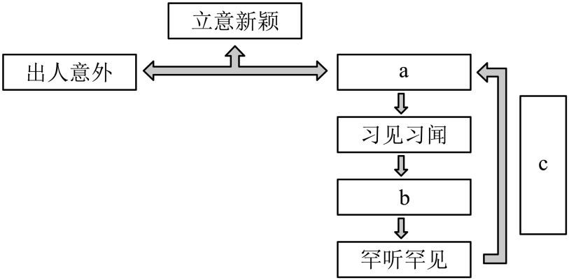

练习 · 语言文字运用
立意新颖与语篇表达
围绕立意的新颖与合理，分析语句衔接、句式转换及图文表达。
导读
文章借游山与治学的联系讨论立意，强调新颖还须合情合理。作答时需分清作者的观点、例证和读者的判断过程。
原文与随文研读
原文按结构分节；随文内容可定位至对应段落。
全文：文章从游山说起，说明立意须兼有新意与合理性，并讨论如何提炼新意。
写诗写文章时，立意要新颖。
怎样才算立意新颖呢？比如，王安石游褒禅山，中途而归。虽然游山半途而废，这件事令人遗憾，但他却能够从中想到做学问，从而在回来后所写的《游褒禅山记》中悟出一番至理名言：“世之奇伟、瑰怪、非常之观，常在于险远，而人之所罕至焉，故非有志者不能至也。”这样写使人可以想象到，攀登学问的高峰，就和游山一样，没有一股志气毅力是办不到的。能够从令人扫兴的事情里悟出新的意义，确实出人意料，可以称为立意新颖。
（ ）？显然不是的。
真正做到立意新颖，不但要“出人意外”，而且还应“入人意中”。所谓“入人意中”，就是合情合理，凭理得之，经得起人们的品评。李渔《闲情偶寄》说得好：“所谓意新颖者……即在饮食居所之内，布帛菽粟之间。”有所见闻，看起来是“习见习闻”，但经作者一番深悟和提炼，写出来却是让人感到“罕听罕见”，然而细细一品，又不能不点头称是。这就是“入人意中”。
①至于怎样做到立意新颖，最根本的因素是有赖于作者对事物的深刻了解和分析。②临文之际，要能够把握事物的本质。③能看清事理的“真种子”，不为表面现象所迷惑。④只要去粗取精、由表及里，对事物善于分析，看到它对人们富有教益的本质东西，⑤才能够提炼出新意，写出耐人寻味的篇章。
第1题 · 语句衔接
59．下列填入文中括号处的句子，衔接最恰当的一项是（ ）
A．那么，立意新颖可以决定诗或文章“出人意外”吗
B．然而，立意新颖就等同于“出人意外”的诗或文章吗
C．进一步来说，“出人意外”的诗或文章都是立意新颖的吗
D．但是，“出人意外”的诗或文章都可算作立意新颖吗
参考答案1展开 / 收起
参考作答
D。
文本分析
A项查看证据 ↗
“立意新颖能否决定出人意外”与下文所辨析的“出人意外是否足以构成立意新颖”并非同一问题。
B项查看证据 ↗
“立意新颖”是评价，“诗或文章”是作品，直接将二者等同，比较的对象不协调。
C项查看证据 ↗
设问方向接近，但“进一步来说”强调递进，不能像“但是”那样突出对上文判断的转折和限定。
D项查看证据 ↗
以转折方式追问“出人意外”是否足够，下文先否定，再提出“入人意中”的另一条件，语意衔接完整。
命题思路
围绕指定语言现象或分析任务定位材料，检查表达关系和判断条件；材料迁移题须分别交代判断标准及其在新文本中的依据。
第2题 · 句式变换
60．请将文中第二段画横线的句子改写为一个长单句，可以改变语序、增删词语，但不得改变原意。
参考答案2展开 / 收起
参考作答
他却能够从游山半途而废这件令人遗憾的事中想到做学问。
文本分析
确定主干查看证据 ↗
以“他能够想到做学问”为主谓核心，保留“却”所体现的转折。
压缩修饰成分查看证据 ↗
将游山半途而废及其令人遗憾的评价整合为“事”的修饰成分，用“从……中”连接联想的来源。
命题思路
围绕指定语言现象或分析任务定位材料，检查表达关系和判断条件；材料迁移题须分别交代判断标准及其在新文本中的依据。
第3题 · 图文转换
61．下图是对文中第四段内容的梳理，请在a、b、c三处填入合适的短语。

参考答案3展开 / 收起
参考作答
a：入人意中；b：深悟和提炼；c：细细品味。
文本分析
两个条件查看证据 ↗
从第四段的并列条件可知，a与“出人意外”共同构成立意新颖。
作者和读者查看证据 ↗
b概括作者从常见经验中形成新认识的过程；c概括读者通过品味确认其合情合理的过程。
命题思路
围绕指定语言现象或分析任务定位材料，检查表达关系和判断条件；材料迁移题须分别交代判断标准及其在新文本中的依据。
第4题 · 病句辨析
62．文中第五段标序号的句子有两处表述不当，请指出其序号并做修改，使语言准确流畅，逻辑严密。可少量增删词语，不得改变原意。
参考答案4展开 / 收起
参考作答
①改为“至于怎样做到立意新颖，这有赖于作者对事物的深刻了解和分析”。
④将“只要”改为“只有”，与下文“才”相呼应。
文本分析
①的句式查看证据 ↗
“最根本的因素是……”与“有赖于……”两种结构叠用；可保留其中一种。
④的关联查看证据 ↗
后文用“才”引出结果，前面的条件应使用“只有”与之配合。
命题思路
围绕指定语言现象或分析任务定位材料，检查表达关系和判断条件；材料迁移题须分别交代判断标准及其在新文本中的依据。
第5题 · 标准迁移
63．请依据文本中“立意新颖”的判断标准，简要分析课文《荷花淀》一文中“伏击战”情节。
参考答案5展开 / 收起
参考作答
①出人意外：文章从探亲妇女的经历进入战斗场面，战后又写人物对话和战利品，叙述重心富有变化。
②入人意中：妇女驾船躲避敌人，敌船追入荷花淀，战斗经过与人物处境和水乡环境相衔接。
文本分析
明确标准查看证据 ↗
材料把新颖理解为有新意且合情合理，需要分别说明两个方面。
情节的新意查看证据 ↗
妇女们进入荷花淀后才认出埋伏的丈夫，战士战后欢笑并打捞战利品；叙述从妇女的有限所见进入伏击场面。
情节的合理性查看证据 ↗
浅水使敌方大船难以通过，妇女驾船转入荷花淀与当地地形和逃避追击的处境相适应。
命题思路
围绕指定语言现象或分析任务定位材料，检查表达关系和判断条件；材料迁移题须分别交代判断标准及其在新文本中的依据。
第6题 · 观点评析
【课堂拓展】联系本材料和《AI写作与语言表达》，评析“借助写作工具就无法产生新颖立意”这一说法。请分别说明立意的判断标准、工具的影响以及作者可以采取的做法。
课堂评分建议（8分）：说明新颖立意的判断标准2分；结合两份材料分析工具的影响3分；提出并说明作者可采取的做法3分。
参考答案6展开 / 收起
参考作答
①新颖立意既要有新的发现，也要经得起情理检验；不能仅凭语言生僻或观点奇特判断。
②依赖模板可能使表达趋同，但工具能否帮助形成新意取决于任务、提示和作者的选择，不能作无条件断言。
③作者可先观察材料、比较解释，再使用工具辅助检索或修改，并独立检验事实、推理和语言效果。
文本分析
立意标准查看证据 ↗
“出人意外”与“入人意中”共同限定立意的新颖，排除仅追求奇异的判断。
工具条件查看证据 ↗
补充材料批评的是对预设模板的过度依赖，这支持对使用方式的审查，并不足以证明任何工具使用都会排除创新。
作者的做法查看证据 ↗
原文强调对事物的深刻了解和分析，主张去粗取精、由表及里；据此可先观察、比较，再核验工具提供的事实、推理和表达。
命题思路
围绕指定语言现象或分析任务定位材料，检查表达关系和判断条件；材料迁移题须分别交代判断标准及其在新文本中的依据。